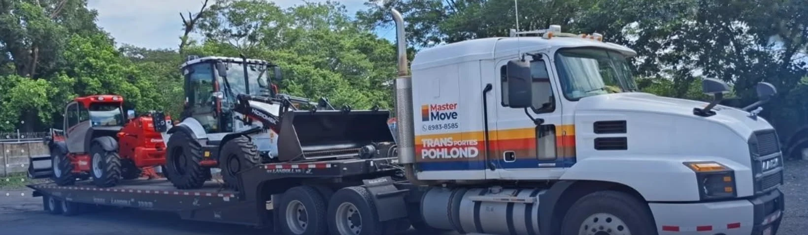
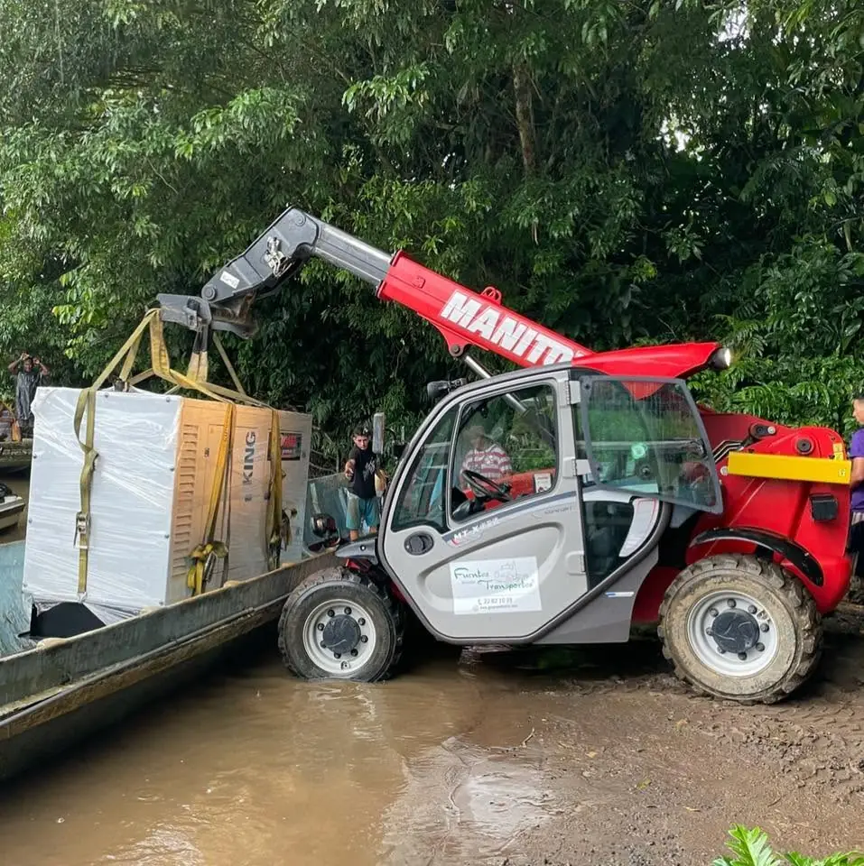
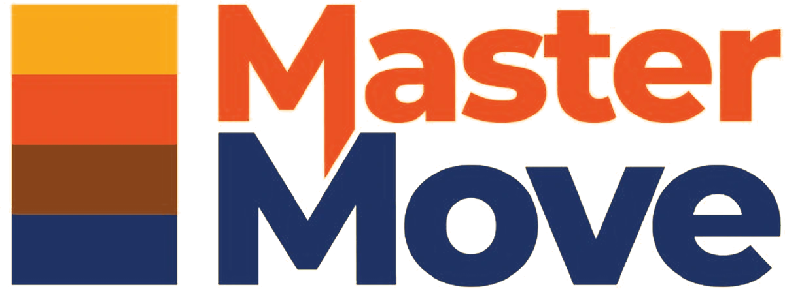
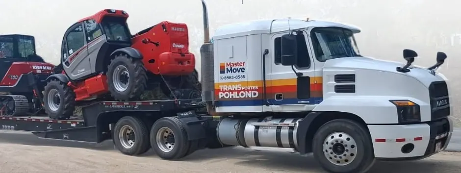
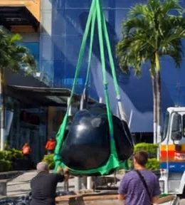
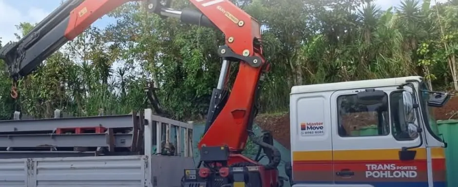
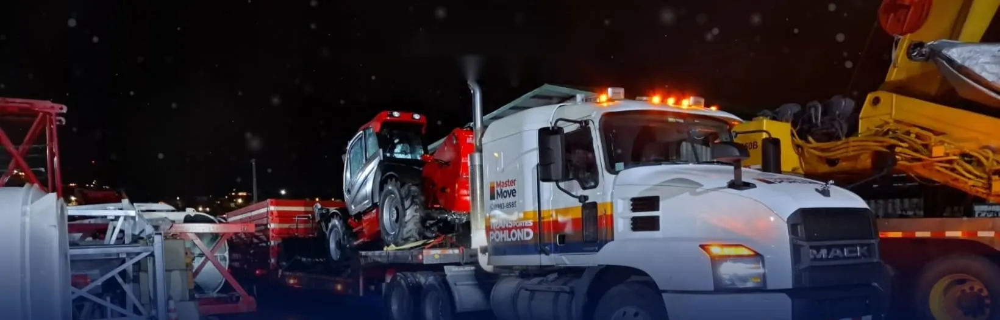

Transporte de carga
PlataformaTraslado de mercadería, materiales y equipo en camiones de plataforma, con la carga bien amarrada y protegida.
Cargamos,transportamosy descargamos.
Camiones con montacargas o grúa a bordo para mover maquinaria, esculturas, vidrio y mercadería en todo Costa Rica, de Limón a Guanacaste.

La empresa
Transportes Pohlond es una empresa costarricense de transporte de carga, con más de 20 años de trayectoria y más de 80 camiones. Llegamos con el equipo para subir y bajar la carga, así que su traslado no depende de montacargas ni de personal en el sitio.


Servicios
Desde mercadería y materiales hasta maquinaria y cargas delicadas, con el equipo adecuado para cada traslado, en todo Costa Rica.
Traslado de mercadería, materiales y equipo en camiones de plataforma, con la carga bien amarrada y protegida.

Master Move es nuestra división de cargas especializadas, con el equipo más pesado y fuerte de la flota: maquinaria, estructuras, esculturas y vidrio, movidos con planificación, camión con grúa y maniobras cuidadosas.
El montacargas viaja con el camión: cargamos, transportamos y descargamos en su sitio, sin esperar equipo de terceros.

Entregas en todo Costa Rica, de Limón a Guanacaste, coordinadas con usted de principio a fin.
Flota
Cada tipo de camión resuelve un trabajo distinto. Le asignamos el que su carga necesita; las capacidades exactas se las confirmamos al cotizar.
Montacargas a bordo
Grúa articulada

Master Move
Carga general
¿Qué camión necesita?
Lo que transportamos
Cuando la carga es frágil, cada detalle cuenta: el embalaje, el amarre, la maniobra y la descarga.

Izadas con grúa y eslingas, con cada maniobra planificada para que lleguen intactas.
Grúa · eslingasEmbalaje, amarre y manejo cuidadoso de principio a fin. Lo frágil viaja protegido.
Embalaje · amarreMontacargas a bordo. Grúa cuando la carga lo pide.
Plataforma · grúaTarimas, cajas y materiales de obra, cargados y descargados en su sitio.
Montacargas
Oficinas contenedor y estructuras de acero, colocadas con grúa donde usted las necesita.
Grúa articuladaDivisión de cargas especializadas
Master Move es la división de Transportes Pohlond para cargas especializadas: maquinaria pesada, estructuras y piezas que requieren grúa, planificación y maniobras cuidadosas.
Cómo trabajamos
Con el montacargas propio subimos la carga al camión, sin depender de equipo en el sitio de origen.
La carga viaja amarrada y protegida, en la plataforma adecuada para su tamaño y peso, a cualquier punto del país.
Bajamos la carga donde usted la necesita, con montacargas o grúa. Menos tiempo y menos riesgo para su personal.
Cobertura
Nuestros camiones recorren las siete provincias. Usted nos dice dónde se recoge y dónde se entrega; nosotros llegamos.

Día y noche
Cada traslado se planifica para que su carga llegue completa, a tiempo y sin riesgos innecesarios.
Cotizar
Tres pasos y se abre WhatsApp con el mensaje listo y ordenado. Le respondemos con la cotización.
Trabaje con nosotros
Si tiene experiencia manejando camión y quiere trabajar dentro del GAM, envíenos sus documentos.
Marque lo que ya tiene:
0 de 7
Requisitos y cómo aplicar · También puede enviarlo a rh-administracion
Esta página no guarda sus datos; usted los envía por WhatsApp.
Cada solicitud le llega a Recursos Humanos ordenada en una ficha.
Preguntas frecuentes
Sí. Trabajamos en todo el país, de Limón a Guanacaste, incluida toda la Gran Área Metropolitana.
Es un camión que lleva su propio montacargas: cargamos, transportamos y descargamos sin depender de montacargas ni de personal en el sitio.
Sí. Lo usamos para izar y colocar estructuras, contenedores, esculturas y maquinaria donde no entra un montacargas.
Sí, con embalaje, amarre, izaje con eslingas y maniobras planificadas para que cada pieza llegue como salió.
Es la división de cargas especializadas de Transportes Pohlond, con el equipo más pesado y fuerte de la flota.
Con el cotizador de esta página o por WhatsApp al 8983 8585. Díganos qué es la carga, el peso o las medidas, dónde se recoge, dónde se entrega y la fecha; si puede, mande fotos.
De lunes a viernes, de 7:00 a. m. a 6:00 p. m.
Sí. Buscamos choferes con licencia B1, B2 o B3 y de 2 a 4 años de experiencia según el puesto. Puede aplicar por WhatsApp o en la sección de empleo.
Esta página no guarda sus datos; usted los envía por WhatsApp.